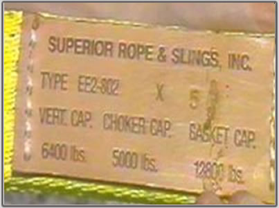
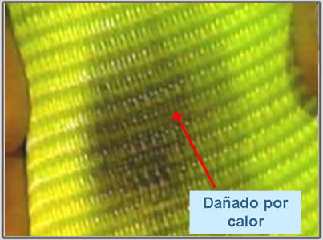
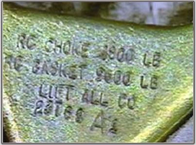
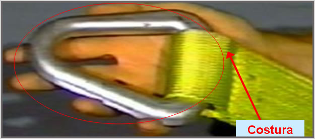
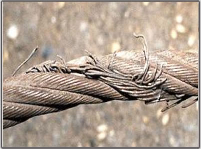

Cuerda
La cuerda de fibra natural o sintética debe mostrar:
- Nombre o marca registrada del fabricante
- Capacidad estimada según el tipo de enganche
- Tipo de material

Los amarradores sintéticos se deben retirar de servicio:
- Quemaduras de ácidos.
- Alguna parte del amarrador está derretida o carbonizada.
- Roturas, perforaciones, rasgaduras o cortes.
- Costuras desgastadas o dañadas.
- Ajustes deformados.

Los accesorios para amarradores sintéticos deben ser:
- De la misma capacidad como el amarrador.
- No deben tener bordes constantes que puedan dañar los amarradores.

Costuras
Las costuras son el único método aprobado para añadir accesorios en los extremos de los amarradores sintéticos o para formar un empalme.

Para cualquier tipo de amarrador siempre hay que:
Inspeccionarlos diario y retirarlos de servicio cuando estén dañados o defectuosos.